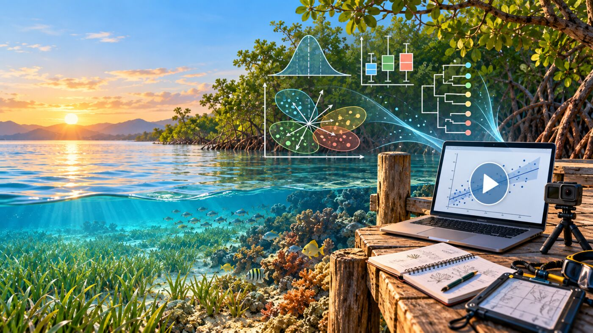
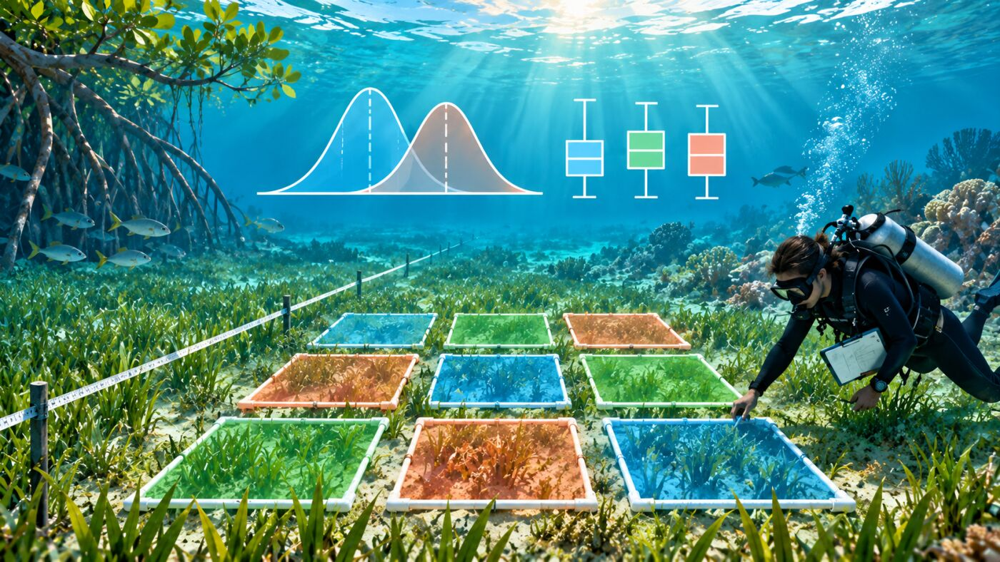
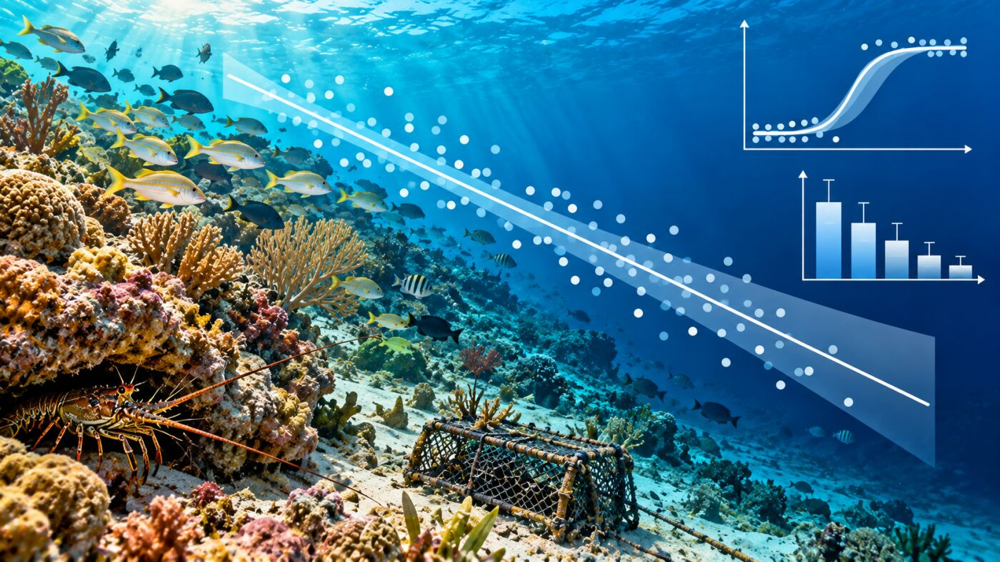
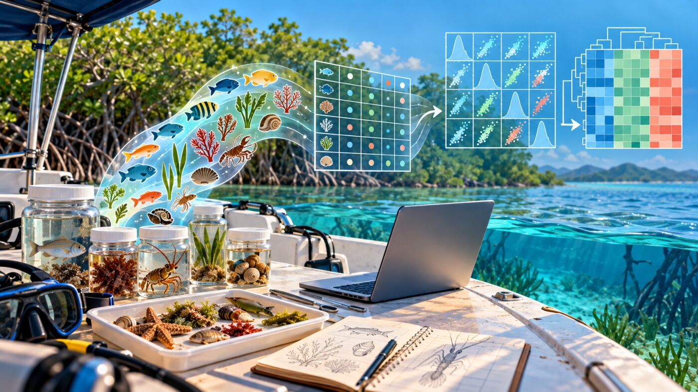
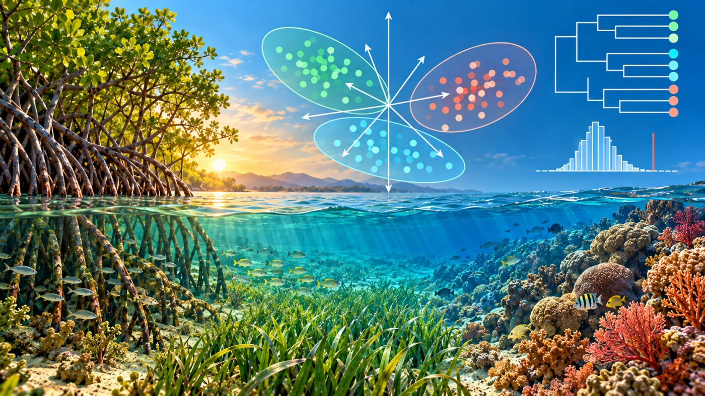

Videos y presentaciones de las clases

Los siguientes videos y presentaciones corresponden a las sesiones de la asignatura Bioestadística y Diseño Experimental, componente disciplinar de la Maestría en Ecología y Biodiversidad de la Universidad del Magdalena, periodo 2026-II (48 horas de acompañamiento directo, modalidad presencial). A medida que avance el curso se irán agregando los enlaces de cada sesión grabada y de cada presentación.
Las sesiones se desarrollan en cuatro fines de semana, con el mismo horario: viernes de 6:00 a 10:00 pm y sábado de 8:00 am a 12:00 pm y de 2:00 a 6:00 pm.
| Semana | Fechas | Bloque temático | Evidencia asociada |
|---|---|---|---|
| 1 | 9–10 oct | Diseño experimental e inferencia estadística | Base de la Evidencia 1 |
| 2 | 16–17 oct | Modelos lineales: regresión y GLM | Cierre de la Evidencia 1 y Evidencia 2 |
| 3 | 23–24 oct | Multivariados I: bases de datos y exploración gráfica | Evidencia 3 (cuestionarios Quarto) |
| 4 | 30–31 oct | Multivariados II: ordenación, clasificación y pruebas multivariadas | Evidencia 4 (estudio de caso) |
Nota: las semanas 3 y 4 retoman y actualizan los talleres de estadística multivariada ya disponibles en este repositorio. Si existen grabaciones de dictados anteriores de esos temas, se pueden añadir como material de referencia de otro periodo sin reemplazar las de 2026-II.
Estos videos se complementan con los talleres en R/Quarto de cada semana y con la bibliografía base del curso: Quinn & Keough (2024), Experimental Design and Data Analysis for Biologists (2.ª ed.), y Logan (2010), Biostatistical Design and Analysis Using R.
1. Diseño experimental e inferencia estadística - Semana 1

Principios y tipos de diseño experimental
Grabación y presentación disponibles después de la sesión.
Estimación por intervalos y pruebas de hipótesis
Grabación y presentación disponibles después de la sesión.
Potencia y tamaño de muestra
Grabación y presentación disponibles después de la sesión.
2. Modelos lineales: regresión y GLM - Semana 2

Regresión lineal simple y múltiple
Grabación y presentación disponibles después de la sesión.
Supuestos, diagnóstico y selección de modelos
Grabación y presentación disponibles después de la sesión.
Modelos lineales generalizados: binomial y Poisson
Grabación y presentación disponibles después de la sesión.
3. Multivariados I: bases de datos y exploración gráfica - Semana 3

Manipulación de bases de datos multivariadas en Excel y R
Grabación y presentación disponibles después de la sesión.
Exploración y visualización multivariada en Quarto
Grabación y presentación disponibles después de la sesión.
Acompañamiento de los cuestionarios Quarto
Grabación disponible después de la sesión.
4. Multivariados II: ordenación, clasificación y pruebas multivariadas - Semana 4

Ordenación multivariada: PCA, NMDS, CA, RDA y CCA
Grabación y presentación disponibles después de la sesión.
Clasificación y pruebas de hipótesis multivariadas
Grabación y presentación disponibles después de la sesión.